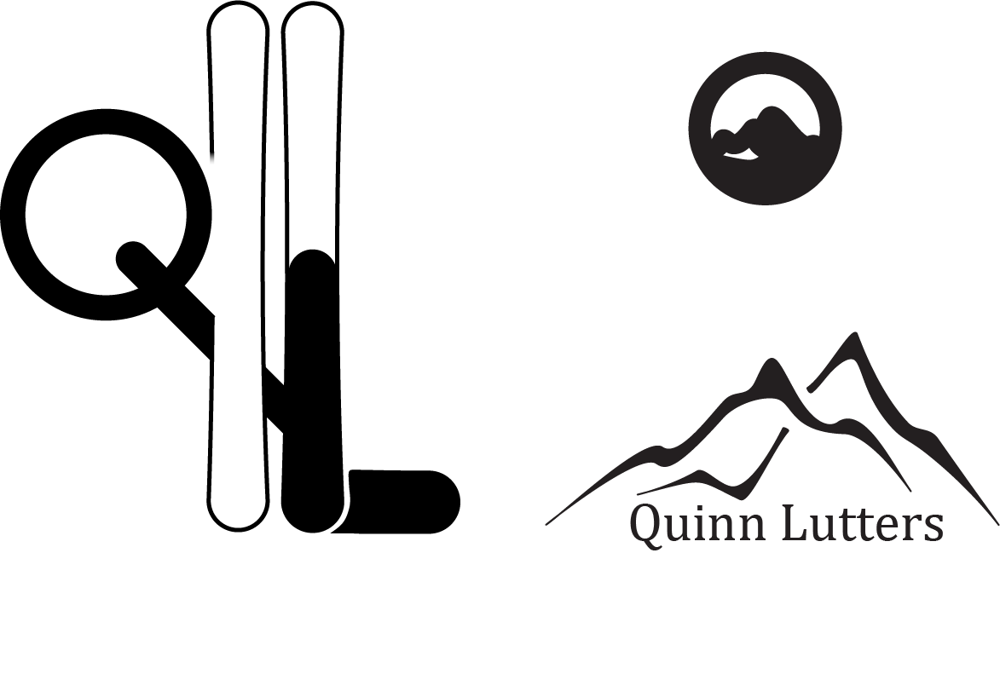

For logo design I had to use Adobe illustrator which was my first time using it and therefore I had to try to understand what I can do with it and how I can use it. Therefore I watched a few tutorials on how I can use it and in the meantime I started to try some stuff out to get a feel for how everything worked. Once I was kind of used to how illustrator worked I started to make my sketches in illustrator and make multiple iterations of them. The main tool that I used was the pencil tool, which is a really powerful tool since you can make almost any shape you want with it, but it is tricky to use, since some the radiuses can be really sensitive. Now that I finished my logo I am pretty confident in my skills in illustrator, I can improve a lot, but I do think that I have a solid base which I can start with.
I wasn’t fully satisfied with my logo just yet, so I decided to give it another shot. This time I gave it a some more thoughts and I also decided to look on the web and then eventually this idea shot into my mind. I didn’t have a good way to put my name in my previous logo, but with this one you have the Q on the left hand side running into the back of the first ski and into the second ski, I decided to put the L into the left ski and at first it didn’t really feel right, so I added a bit of blank space in between the horizontal and vertical part of the L, to just make it a bit more interesting. I used the skewing tool to make skis a bit tighter in the middle, which was a bit finnicky, since I couldn’t really get good control over the skew tool, but I worked out in the end. I also experimented with the eraser and scissor tools, to delete some parts, like a part on the left ski above the Q. In the end I think this logo turned our really well and tells a good story, by having the skis and my name.